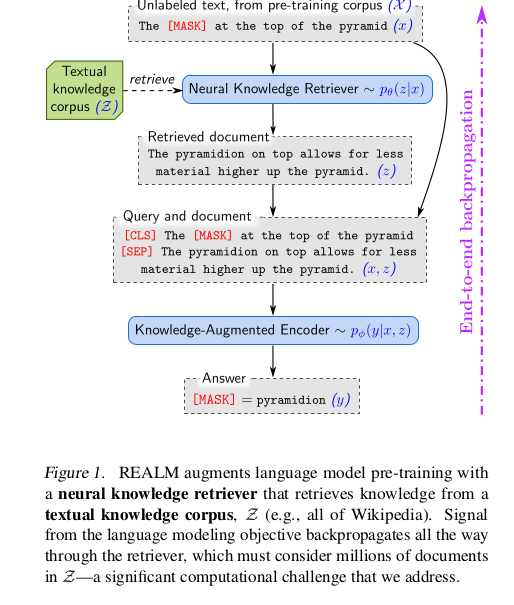
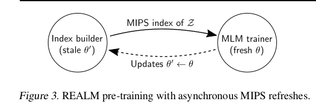

Introduction
REALM is a paper mentioned in the T5 paper titled: How Much Knowledge Can You Pack Into The Parameters of a Language Model?
TLDR: This paper retrieves documents that have the information present while solving Question-Answer type problems.
NOTE: This post is more like my running notes while reading the paper than a comprehensive blog. I will update this blog once I learn a little more about the transformer architecture.
Introduced a latent knowledge retriever, which can attend and retrieve documents over large corpus and can be trained in unsupervised manner using masked language modelling technique and backprop through retreiver which considers lots of docs.

Training process for REALM Key point: Train retriever using a performance-based signal from unsupervised text.
Retrieval based LM => Moar computational resources => Moar money
- Solution: Computation performed for each doc is cached and can be used again. Best doc selected using Maximum Inner Product Search(MIPS). Read the paper here.
REALM retriever can be used on downstream tasks via transfer learning.
REALM is SOTA on NQ-Open, WQ and CuratedTrec.
Approach
Retreive-then-predict generative process
Training: Masked-LM. Fine-tuning: Open QA task
Computing chance of the document given a question decomposed into two steps:
Function to be computed: \[p(y\|x)\]
Given \[x\],retrive documents \[z\] from corpus \[Z\]. Modelled as: \[p(z\|x)\]
Condition of both \[z\] and \[x\] to generate output \[y\] i.e \[p(y\|z, x)\]
Overall likelihood \[y\] is generated by treating \[z\] as latent variable and marginalizing over all documents \[z\]
\[ p(y\|x) = \sum_{z \epsilon Z} p(y\|z, x) * p(z\|x) \]
Architecture
Neural Knowledge Retriever which models the distribution: \(p(z\|x)\)
Knowledge Augmented Encoder which models the distribution \[p(y\|z, x)\]
Neural Knowledge Retriever
Dense inner product model.
\[ \begin{aligned} p(z\|x) = \frac{exp(f(x,z))}{\sum_{z'}{exp(f(x,z'))}} \\ f(x,z) = Embed_{input}(x)^TEmbed_{doc}(z) \end{aligned} \]
\[Embed_{input}\] and \[Embed_{doc}\] are embedding functions
\[f(x,z)\] is called relevance score. It is inner product of vector embeddings.
Relevant Distribution is softmax over all relevance scores
Embedding implement using BERT-style transformers. Join using <SEP>, prefix using <CLS> and append <SEP> as the end token. \[\begin{aligned} \\ join_{BERT}(x) = [CLS]x[SEP] \\ join_{BERT}(x_1, x_2) = [CLS]x_1[SEP]x_2[SEP] \end{aligned}\]
Pass above into transformer, which gives over vector for each token. Perform linear projection to reduce dimensionality of vector \[\begin{aligned} \\ Embed_{input}(x) = W_{input}BERT_{CLS}(join_{BERT}(x)) \\ Embed_{doc}(z) = W_{doc}BERT_{CLS}(join_{BERT}(z_{title}, z_{body})) \end{aligned}\]
Knowledge-Augmented Encoder
Given input \[x\] and relevant doc \[z\], this defines \[p(y\|z,x)\]
Join \[x\] and \[z\] into single sequence and feed into transformer
Here, training is different for pre-training vs fine-tuning
For pre-training, predict [MASK] token. Use same Masked LM(MLM) loss as in Transformer(Devlin et al.)
For Open-QA, we need to produce string \[y\].
Assumption: \[y\] occurs as sequence of tokens in some document in the corpus.
Training
Compute gradients in \[\theta\] and \[\phi\] and optimize using SGD.
Challenge: Computing \[p(y\|x)\]
Approx by summing over top \[k\] documents with highest prob under \[p(z\|x)\]
Question: How to find top \[k\] docs? Answer: Use MIPS
Need to precompute \[Embed_{doc}(x)\] for all docs. Problem? It changes with each step of SGD.
Solution: Async refresh \(Embed_{doc}\) every 500 steps
Use MIPS to select top \(k\) docs. For these docs, recompute \(p(z\|x)\) using new \(\theta\).
Implementing async MIPS refreshes
Two jobs running in parallel:
Primary trainer: Perform gradient updates on parameters
Secondary index builder: Embeds and indexes the docs

Async MIPS implementation Async refresh used only for pre-training
For fine tuning, build index once from pre-trained \(\theta\) and use it.
What does retriever learn?
Retriever promotes docs that improve accuracy
This can be analyzed by analyzing gradient wrt the parameters
Injecting inductive biases into pre-trianing
Salient span masking: Some questions require only local context. Select named entities and dates and mask one of them. Performs better.
Null document: Add null document to top \[k\] documents to allow answers even when no context is required
Prohibiting trivial retrievals: If knowledge corpus \[Z\] is the same as pre-training corpus \[X\], it can predict \[y\] by looking at \[x\] in \[z\]. Exclude trivial candidate
Initialization: Warm up \[Embed_{input}\] and \[Embed_{doc}\] using Inverse Cloze Task(ICT) i.e model trained to retrieve the doc where the sentence came from.
Experiments
- REALM outperforms all approaches by a big margin.
Future Work
Structured knowledge where we learn entities which are informative
Multi lingual setting. Retreiving knowledge in high resource language to better represent text in low resource language
Multi model setting. Retrieve images or videos that can provide knowledge not present in text
Resources
There are a number of other resources you can use to learn more about this paper such as:
Comments
Overall, I enjoyed reading this paper. However, there are two key points that concern me: